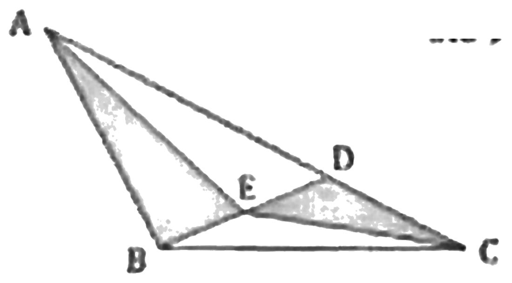
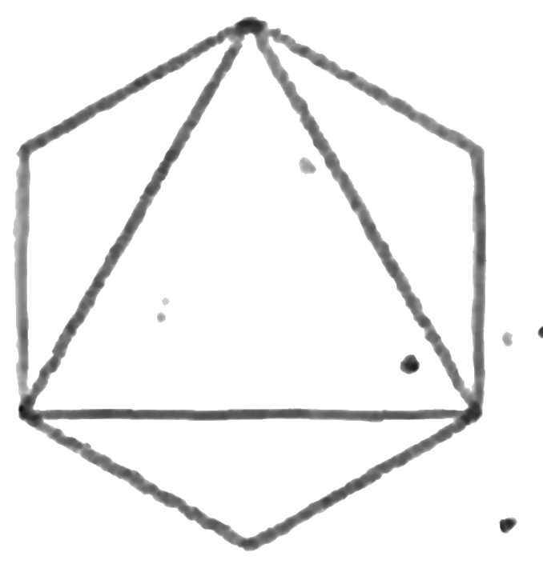

8ˣ − 4⁻ˣ = ?
הצגת הפתרון
התשובה הסופיתתשובה (1)2⁵ˣ − 12²ˣ
דרך הפתרון והסבר
8ˣ = 23x ו־4⁻ˣ = 2−2x. מכנה משותף 22x: 25x − 122x.
מוקשים נפוצים
לעבור לבסיס 2 לפני שמחסירים.
נבדקהפתרון תואם את מפתח התשובות של הספר.
8ˣ − 4⁻ˣ = ?
התשובה הסופיתתשובה (1)2⁵ˣ − 12²ˣ
8ˣ = 23x ו־4⁻ˣ = 2−2x. מכנה משותף 22x: 25x − 122x.
לעבור לבסיס 2 לפני שמחסירים.
נבדקהפתרון תואם את מפתח התשובות של הספר.

בסרטוט שלפניכם משולש ABC. D נקודה על הצלע AC. נתון: BD = 2BE.
על נתונים אלו ונתוני הסרטוט, השטח האפורשטח משולש ABC = ?
התשובה הסופיתתשובה (2)½
BD = 2BE ⇒ E אמצע BD. △ABE הוא חצי מ־△ABD (אותו קודקוד A, בסיס חצי), ו־△EDC הוא חצי מ־△BDC. סכום האפורים = ½(ABD + BDC) = ½ABC.
משולשים עם אותו גובה – יחס השטחים שווה ליחס הבסיסים.
נבדקהפתרון תואם את מפתח התשובות של הספר.
נתון: |a² + b²| = 2ab
מה מהבאים נכון בהכרח?
התשובה הסופיתתשובה (3)a ו־b הם מספרים שווים
a² + b² ≥ 0 ולכן הערך המוחלט מיותר: a² + b² = 2ab ⇒ (a − b)² = 0 ⇒ a = b.
מספרים נגדיים נותנים 2ab שלילי – לא יתכן.
נבדקהפתרון תואם את מפתח התשובות של הספר.
⚠ לעידו קובייה (גוף תלת־ממדי) הוגנת בעלת 12 פאות זהות. עידו צבע את כל פאות הקובייה באחד מ־3 צבעים – ירוק, כחול ואדום. ידוע:
• ישנה לפחות פאה אחת מכל צבע.
• הסיכוי שבזריקת הקובייה תתקבל פאה ירוקה גדול פי 2 מהסיכוי שתתקבל פאה אדומה.
מה מהבאים לא יתכן?
התשובה הסופיתתשובה (4)כל התשובות תיתכנה
אדום r, ירוק 2r, כחול 12 − 3r (r = 1, 2, 3). (1): כחול = 3·(3r) ⇒ r = 1, כחול 9 ✓. (2): כחול = 3r ⇒ r = 2, כחול 6 ✓. (3): כחול = r ⇒ r = 3, כחול 3 ✓. כל המצבים אפשריים.
לבדוק כל תשובה מול האילוץ של 12 פאות.
נבדקהפתרון תואם את מפתח התשובות של הספר.
חלק מהטקסט מטושטש בסרטון; הפתרון לפי הנוסח שנקרא.
לאיזה מהביטויים הבאים יש את הערך הגדול ביותר?
⚠ סדרי השורשים (המספרים הקטנים) לא קריאים בסרטון – אלה הסדרים הסבירים לפי המספרים (243=3⁵, 81=3⁴, 128=2⁷, 64=2⁶). יש לבדוק בספר.
התשובה הסופיתתשובה (1)⁵√244
⁵√244 > ⁵√243 = 3, ⁴√80 < ⁴√81 = 3, ⁷√129 ≈ ⁷√128 = 2, ⁶√65 ≈ ⁶√64 = 2. הגדול ביותר: ⁵√244.
להשוות לחזקות ידועות (3⁵ = 243, 3⁴ = 81) במקום לחשב שורשים.
נבדקהפתרון תואם את מפתח התשובות של הספר.
סדרי השורשים נקראו מתוך המספרים (243 = 3⁵, 81 = 3⁴ וכו').

בסרטוט שלפניכם ABCD מלבן. בתוך המלבן חסומים שלושה מעגלים חופפים שרדיוסם r ס"מ. המעגלים משיקים זה לזה ומשיקים למלבן.
לפי נתונים אלו והנתונים שבסרטוט, מה שטחו של המלבן ABCD (בסמ"ר)?
התשובה הסופיתתשובה (3)r²(6 + 10√3)
שלושה מעגלים זה מעל זה ⇒ AD = 6r. המרכז התחתון במרחק r מ־D ומ־AD. הקטע מ־B אליו יוצר 60° עם AB ⇒ הפרש הגבהים 5r מול הפרש רוחב (w − r): w − r = 5r√3. שטח = 6r · (r + 5r√3) = r²(6 + 10√3).
הזווית 60° מתייחסת לצלע AB – לבדוק לאיזה כיוון.
נבדקהפתרון תואם את מפתח התשובות של הספר.
נתון: ᵃ√8 · ᵃ√8 · ᵃ√8 = 2ᵃ , a ≠ 0
מה מהבאים יכול להיות ערכו של a?
התשובה הסופיתתשובה (3)−3
(ᵃ√8)³ = 83a = 29a = 2ᵃ ⇒ a² = 9 ⇒ a = ±3 ⇒ −3 מבין התשובות.
a שלילי מותר; לא לפסול את −3.
נבדקהפתרון תואם את מפתח התשובות של הספר.

בסרטוט שלפניכם מעגל שמרכזו O בו הועברו שני קטרים (AB ו־CD) המאונכים זה לזה.
בכמה דרכים שונות ניתן להגיע מנקודה A לנקודה B אם ידוע כי אסור לעבור באותה הנקודה פעמיים?
התשובה הסופיתתשובה (2)9
צמתים: A, B, C, D, O. דרכים בלי לחזור על נקודה: A-O-B, A-C-B, A-D-B, A-C-O-B, A-D-O-B, A-O-C-B, A-O-D-B, A-C-O-D-B, A-D-O-C-B = 9.
לספור מסלולים בלי לעבור פעמיים באותה נקודה, כולל אלה שעוברים ב־O.
נבדקהפתרון תואם את מפתח התשובות של הספר.
איזו מהטענות הבאות נכונה בהכרח?
התשובה הסופיתתשובה (3)|x − y − z| = |y − x + z|
x − y − z = −(y − x + z), וערך מוחלט של מספר ושל הנגדי שלו שווה.
|a| = |−a| – לזהות שהביטויים נגדיים.
נבדקהפתרון תואם את מפתח התשובות של הספר.

בסרטוט שלפניכם משושה משוכלל ומשולש שווה צלעות המתלכדים בשלושה קודקודים. נתון: שטחו של המשושה המשוכלל הוא √108 סמ"ר.
מה אורך צלעו של המשולש שווה הצלעות החסום במשושה (בס"מ)?
התשובה הסופיתתשובה (4)2√3
שטח משושה = (3√32)s² = √108 = 6√3 ⇒ s = 2. המשולש מחבר קודקודים לסירוגין ⇒ צלעו s√3 = 2√3.
המשולש מחבר קודקודים לסירוגין – צלעו s√3 ולא 2s.
נבדקהפתרון תואם את מפתח התשובות של הספר.
אין במקבץ הזה שאלות שמתאימות לסינון.